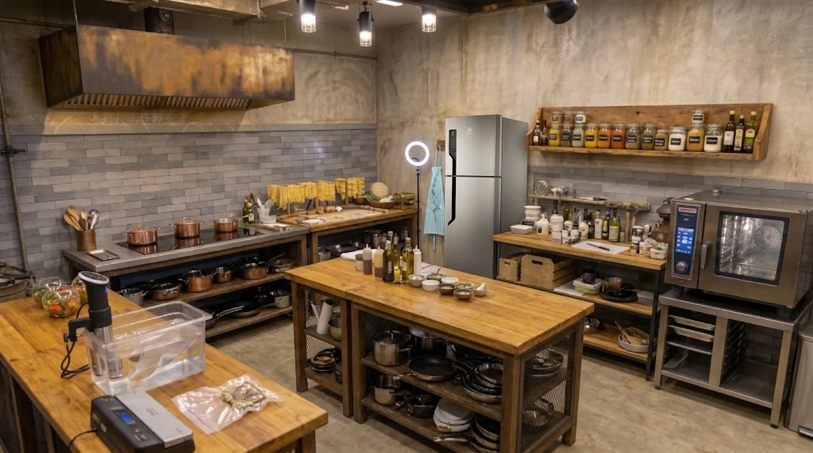

1. Fogão de Indução
É um eletrodoméstico de cocção que utiliza campos eletromagnéticos de alta frequência para gerar calor diretamente no fundo dos recipientes, sem a necessidade de chamas ou resistências elétricas aquecidas..
2. Prateleira de Ervas
Uma prateleira de ervas (ou especialha) é uma estrutura de arrumação e organização concebida para armazenar condimentos, especiarias e ervas aromáticas num acesso rápido durante a preparação dos alimentos.
3. Área de Empratamento
A área de empratamento é a zona técnica da cozinha destinada à montagem final, finalização estótica e controlo de qualidade dos pratos antes de serem servidos à mesa..
4. Banho Sous-Vide
O banho de sous-vide (ou termocirculador de imersão) é um equipamento técnico de cocção de precisão que cozinha alimentos embalados a vácuo em banho-maria, mantendo a água numa temperatura rigorosamente controlada e constante.
5. Forno combinado
O forno combinado é um equipamento de cocção profissional que combina três métodos de confeção no mesmo câmara: calor seco (conveção), vapor de água e a combinação de ambos (calor combinado).